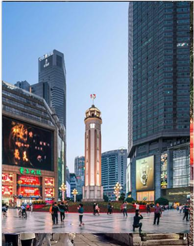

Slide 01/19
商圈地标
解放碑步行街
Jiefangbei Pedestrian Street
游览建议时间
18:00–19:00
地势与海拔
250m
🏨
距大本营酒店往返距离与方案
7晚常驻大本营
约 350 米
步行约 4 分钟
商圈平坦大道直达，无台阶陡坡
扬际·创汇酒店：重庆市渝中区中华路1号创汇首座L1层 (点击复制)
核心看点与机位 · What to See
地道美食与长辈适口推荐 · What to Eat
交通方案与省力路线 · How to Get There
全家出行贴士 · Family Travel Tips
实拍来源：参考照片